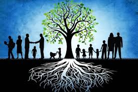
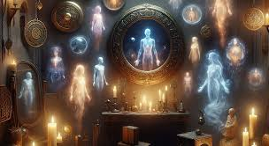

Terapias Holisticas KALMA
Una nueva solución para tu salud que va a la raíz de tus síntomas.


Descubre un mundo de bienestar donde cada detalle está pensado para tu relajación y armonía. En mi consultorio, he creado un ambiente armonioso y acogedor donde el bienestar y la sanación son la prioridad. Aquí, te ofrezco terapias como Barras de Access, Reiki, Constelaciones Familiares y Terapia de Vidas Pasadas, todas enfocadas en liberar bloqueos emocionales, restaurar la energía y promover el bienestar integral.Mi objetivo es guiarte en un viaje de autoconocimiento y sanación, ayudándote a reconectar con tu esencia y alcanzar una vida más plena y en armonía.
Una nueva solución para tu salud que va a la raíz de tus síntomas.
"Reserva tu turno y comienza tu transformación" En las terapias holísticas, cada sesión es un paso hacia el bienestar integral. Ya sea que busques armonizar tu energía, aliviar tensiones o simplemente encontrar un espacio de KALMA , agendar tu turno te permitirá conectar con el equilibrio que necesitas. Reserva ahora y da el primer paso hacia una vida más plena y consciente. ¡Tu bienestar te espera!
Luisa Martínez
"Este blog me ayudó a entender mucho sobre la meditación. ¡Gracias!"
Pedro Gómez
"Muy interesante. Definitivamente lo recomendaré a mis amigos."
Carla Ruiz
"Las terapias de relajación que mencionan aquí son increíbles."
Luis Torres
"Gran contenido. Estoy ansioso por probar algunas técnicas que aprendí."
Marta Jiménez
"Muy bien explicado y fácil de entender. Excelente trabajo."
Carlos Vázquez
"No sabía que las terapias holísticas eran tan efectivas. ¡Muy buen artículo!"